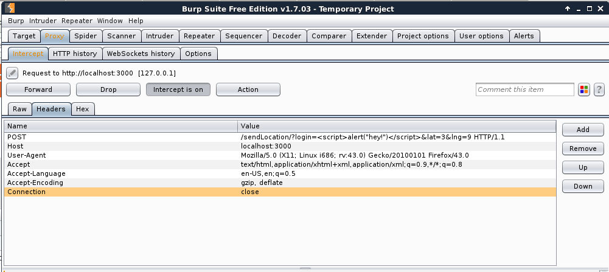
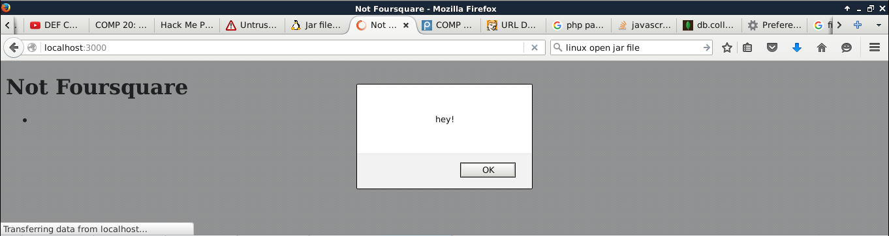
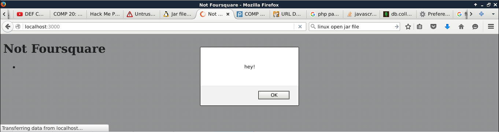
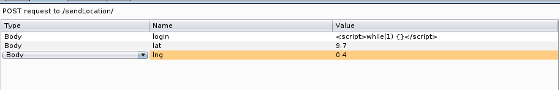
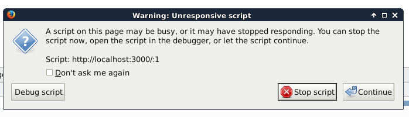

Introduction
For this Lab I was tasked with providing a security assessment of a Web Server. The server I examined was entitled "Not Foursquare", and allowed users to check in with their name, location and time. The server also let users request the json for their own checkins, as well as the homepage which displayed all the checkins from all users. This server had three valid http routes, GET /, GET /checkins.json, and POST /sendLocation.
Methodology
For the testing of this server, I first started with a "black box" approach, attempting to hack and break the page without looking at all at the source code. As this prevented me from knowing what the accepted routes were (besides GET /), I did not get very far trying to hack with a purely back box approach. This led me to peek at parts of the soure code bit by bit, first starting with the available routes, then the parameters they accepted, before eventually doing all my testing while examining the source code for areas to exploit. For the actual testing of sending requests, I primarily used the Burp suite in conjunction with a browser to manipulate and send specialized requests. An example of what one of my test requests might look like can be seen here:
Abstract of findings
The biggest security flaw I found in this particular server involved the loin parameter of the POST /sendLocation route. This parameter is never sanitized or checked, and then appended directly to the html, which allows for malicious code to be inserted directly into the html, which could affect all users of the site. I also faound other minor issues, like the login parameter of the GET /checkins.json route, which can be altered to access more of the database than was intended.
Issues found
| Vulnerability |
Location |
Severity |
Description |
Reccomendations |
| Cross-site Scripting Vulnerability |
POST /sendLocation |
High |
Because the "login" parameter in the sendLocation route is not sanitized, a script could be inserted into the database that will be executed by the browser. This example:   shows a proof-of-concept of how a script could be inserted into the webpage that will be executed any time a user accesses the page. While this alert is harmless enough, the vulnerability could be exploited to unknowingly access information on the users browser, like cookies and session keys.  shows a proof-of-concept of how a script could be inserted into the webpage that will be executed any time a user accesses the page. While this alert is harmless enough, the vulnerability could be exploited to unknowingly access information on the users browser, like cookies and session keys. |
It is reccomended that the login parameter be sanitized on the server-side code, in order to check for special characters like '<' and '>' |
| Database Access Vulnerability |
GET /checkins.json |
Low |
The GET /checkins.json route, which takes one login parameter, is designed to return the json data of all the checkins with the same login name as the one provided. While this works well with a standard login value, the value is never checked for a string value, which allows for some manipulations if the malicious user has a knowledge of mongodb. For example, if the the login parameter is set as an associative array, instead of a string like so:  the server can be "tricked" into returning data for all users instead of just one. This currently is not the most severe issue, because the GET / route provides data for all users anyway, but the vulnerability still remains, and if the site was ever scaled up or altered to have more specialized abilities for different users, this issue would need to be resolved. the server can be "tricked" into returning data for all users instead of just one. This currently is not the most severe issue, because the GET / route provides data for all users anyway, but the vulnerability still remains, and if the site was ever scaled up or altered to have more specialized abilities for different users, this issue would need to be resolved. |
It is reccommended that the login parameter for the GET /checkins.json route is checked to make sure it is a string. |
| Site Crash Vulnerability |
POST /sendLocation |
High |
Similar to the first vulnerability, this issue stems from the lack of validation of the login parameter on the sendLocation route. As we covered before, this can be exploited to access the user's browser's data unknowingly via the \ tag. In addition to malicious attacks on the user's data, this vulnerability can be used to insert code like images into the site, as well as creating something like an infinite loop that will not let the page load for any user that attempts to access the page. In this example, I created an infinite loop with this request:  that cause this reaction in the browser  |
The login parameter in the POST route should be sanitized to check for malicious code. |
Conclusion
While this site had several significant vulnerabilities, they seem to be reasonably easy fixes. That being said, if additions to the functionality of the site are ever to be added (e.g. authentication for submitting check-ins, narrowing which check-ins are shown, private/public check-ins) some of the structure of the code and database in general need to be rethought. For example, if authentication were created so you could only see your own check-ins, sanitization would need to be added to the login parameter of the GET route so it could not be entered as an associative array, as that would return the entire database. However, as the app exists now, only a few checks need to be added to make it secure.